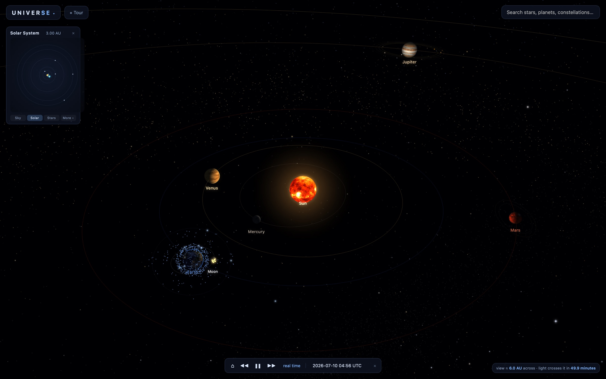
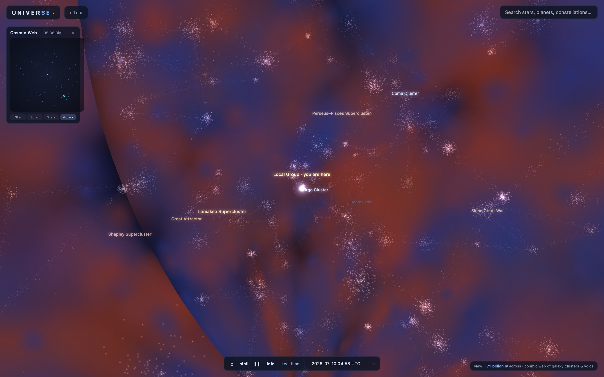
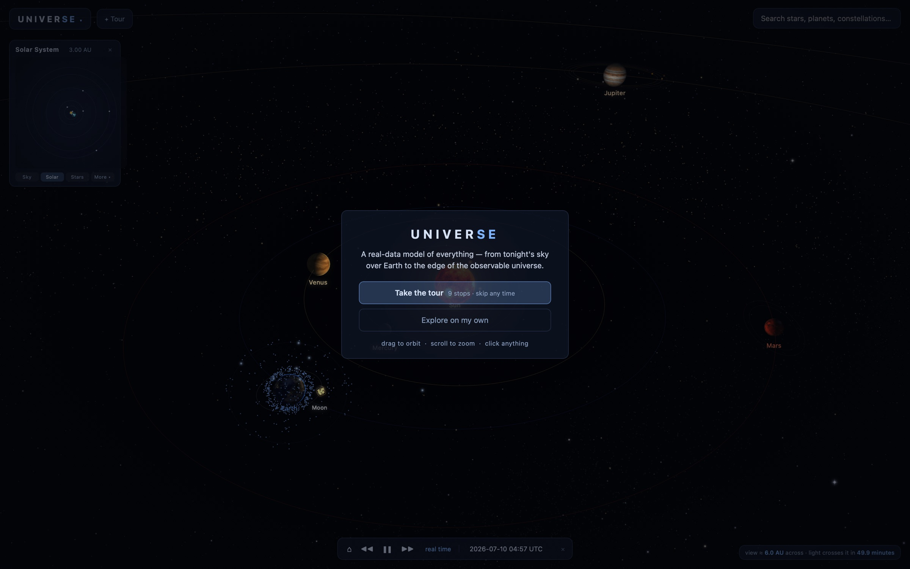
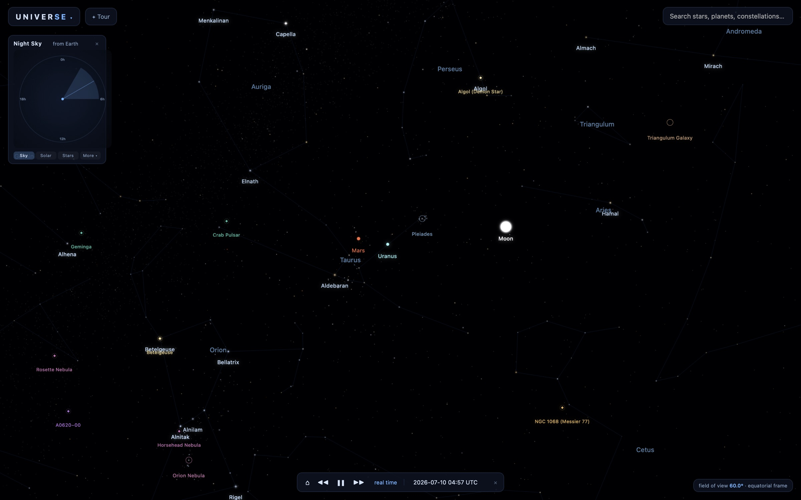
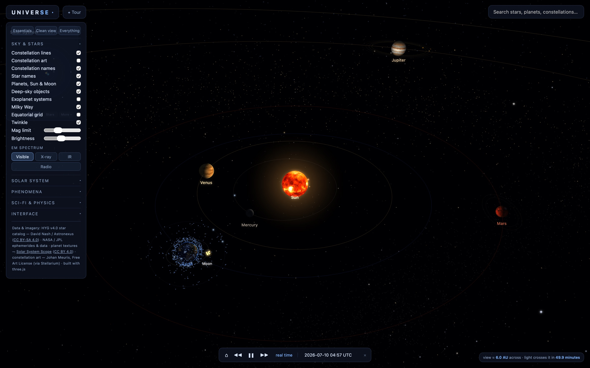

A planetarium built on real catalogs: 119,625 stars, every one clickable, in one continuous zoom from the Moon to the edge of the observable universe.

How do you make the largest possible information space feel navigable — instead of infinite?
The universe is the largest possible information space, and this project models it with real data: the HYG star catalog, JPL planetary ephemerides, IAU constellations, NASA imagery. Rendering it is an engineering problem. The design problem is orientation: in an environment nine orders of magnitude deep, a person needs to know where they are, what they're looking at, and how to get home.
First-time visitors saw a beautiful void and left. The best feature — continuous zoom across six scales — was invisible, buried behind a heavy load and a wall of expert controls.
Design the first minute: a guided tour that rides the real camera outward, a minimap that answers “where am I” at every scale, curated presets in place of raw toggles.
Time-to-interactive cut 5× with progressive texture loading; a first session now reaches the cosmic web instead of stalling in the dark.
A first-time visitor landed in a beautiful, silent solar system with no hint that they could drag, scroll, click a star, or — the whole point — keep scrolling out until the Milky Way became a dot in the cosmic web. The single best feature was invisible. The controls panel read as a debug menu: thirty-five raw toggles, “Minimap” sitting next to “Alcubierre Warp.” And the model told small lies: the minimap in sky view showed a cosmic-web map labeled from a different scale, in orbit view it pinned “you are here” to the Sun at a distance of zero, and the search dropdown hung open over the sky after you'd looked away. If a model of everything is wrong about small things, people stop trusting it about big ones.

The first minute became a designed object. A welcome card offers two honest paths — take the guided tour, or explore alone (skippers get three hint chips that fade on their own). The tour is not a video: it rides the product's real camera through nine self-paced stops — the Solar System, the running clock, a satellite's seat, your own spaceship, then outward through the stellar neighborhood, the Milky Way, and the cosmic web, and home to tonight's sky — with a slow drift outward at each stop while you read. The “powers of ten” hand-off between scales is experienced, not explained; by the last stop the visitor has already traveled the entire model once. A small ✦ Tour button keeps it replayable.

The “you are here” minimap only works if it is right at every scale. I rebuilt it: in orbit it tracks the actual camera (the old one tracked an unused flight camera, so “you” sat on the Sun); across the solar system, the stars, the galaxy, and the cosmic web it redraws its map to the scale you're in; and in the night-sky view — where a position map is meaningless because you're standing on Earth looking up — it becomes a view-direction compass: Earth at the center, a cone sweeping the sky as you turn. “You are here” means something different when here is home.

The old panel had thirty-five raw toggles. Most visitors need three good defaults. I rebuilt the panel into collapsible groups — Sky & Stars, Solar System, Phenomena, Sci-Fi & Physics, Interface — under three one-tap presets: Essentials (the balanced view), Clean view (just the universe, labels off), and Everything. Change any single toggle and the preset highlight turns off — the mix is yours now. Every choice persists between visits, so the model opens the way you left it.

The heaviest UX problem was the loading bar. The scene gated on tens of megabytes of 8K planet textures a first-time visitor couldn't yet see the value of. The fix is progressive: the loader now waits only for lightweight 2K stand-ins, then the full-resolution maps stream in one at a time behind the already-live scene and swap in invisibly. Time-to-interactive dropped roughly five-fold, and nothing pops or flashes — the first Jupiter you see is a slightly softer version of the one you can orbit a minute later.
The same principle runs under the surface: search closes when you click away and reopens where you left it; keyboard shortcuts survive the search box; the scale readout always tells you how wide the view is and how long light takes to cross it; star cards tell you when the light you're seeing left its star. None of these are features anyone asks for, but they are what makes the model feel dependable.